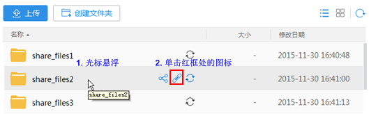

如何与他人分享文件或文件夹
<<返回帮助中心StorBox可以让您轻松分享文件或文件夹。这里有两种分享方式：
- 链接
您可以为文件或文件夹创建链接，将链接发送到朋友或同事的邮箱，与他们一起分享照片、文档、视频等。您的朋友或同事在浏览器中使用链接地址就可以下载文件和文件夹。
- 分享
您可以将文件或文件夹分享给其他StorBox用户，与他们分享团队文档和照片。分享内容发生变化后，系统会自动同步给他们。
链接方式
- 网站
- 登录StorBox网站。
- 将光标悬浮在文件或文件夹上，单击右侧的。

您也可以通过以下方式打开“分享链接”窗口。
- 在“访问权限”右侧设置被分享人所具有的权限。
- 分享文件时，被分享人可获得下载和预览权限。
- 分享文夹件时，被分享人可获得上传、下载和预览权限。
- 设置提取码和有效期，单击“保存”。
提取码是用户查看链接内容的密码。
系统默认没有提取码，链接永久有效。
- 单击
 并填写收件人信息，单击“发送”。
并填写收件人信息，单击“发送”。
如果您希望通过其他方式分享链接，请复制链接地址和提取码到记事本。通过其他方式将链接和提取码发送给被分享人。
- Windows 云管家客户端
- 右键单击云管家客户端托盘图标，选择“显示主界面”。
- 在“个人空间”界面，将光标悬浮在文件或文件夹上，单击右侧的。

您也可以通过以下方式打开“创建链接”窗口。
- 单击“创建链接”并设置访问权限、提取码和有效期，单击“完成”。
提取码是用户查看链接内容的密码。
系统默认没有提取码，链接永久有效。 - 复制链接和提取码，发送给被分享人。
共享方式
- 网站
- 登录StorBox网站。
- 将光标悬浮在文件或文件夹上，单击右侧的
 。
。

您也可以通过以下方式打开“共享”窗口。
- 填写分享人信息并选择分享人所具有的权限，单击“邀请”。
邀请成功后，文件夹的图标变为
 ，表示该文件夹为分享文件夹。
，表示该文件夹为分享文件夹。
- Windows 云管家客户端
- 右键单击StorBox云管家客户端托盘图标，选择“显示主界面”。
- 在“个人空间”界面，将光标悬浮在文件或文件夹上，单击右侧的。
您也可以通过以下方式打开分享窗口。
- 填写分享人信息并选择分享人所具有的权限，单击“邀请”。